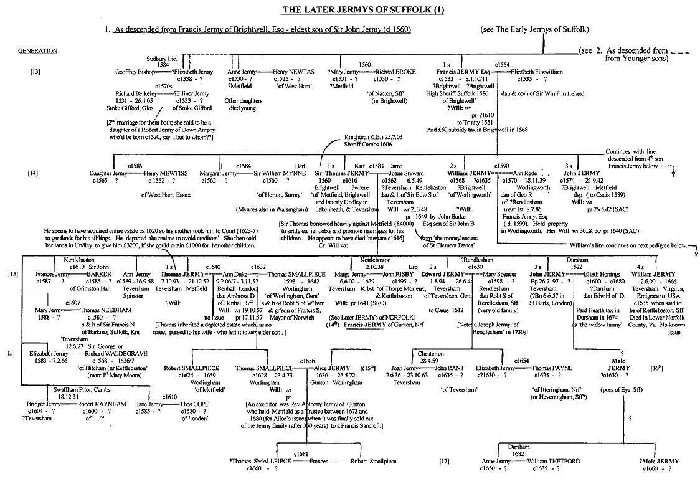
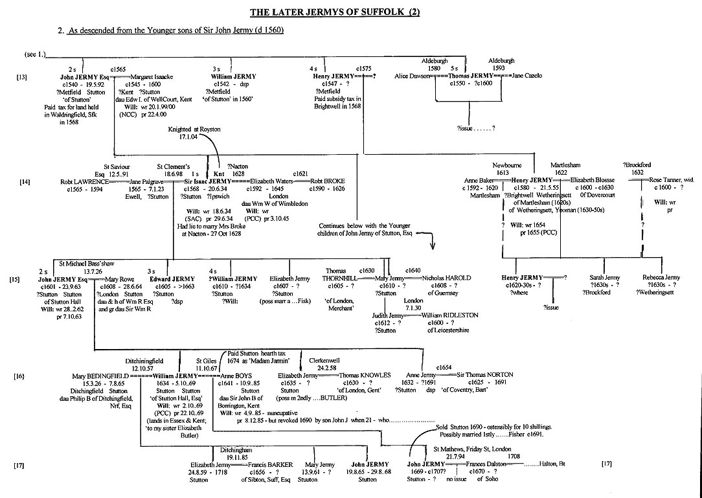
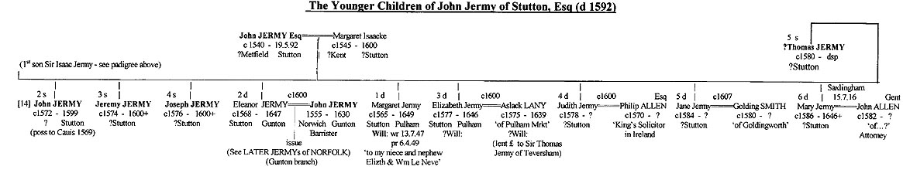
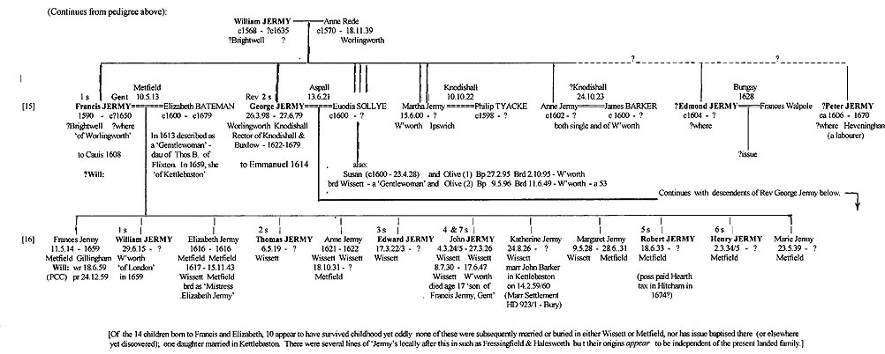
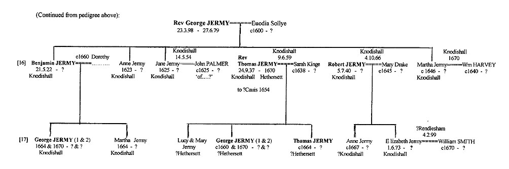
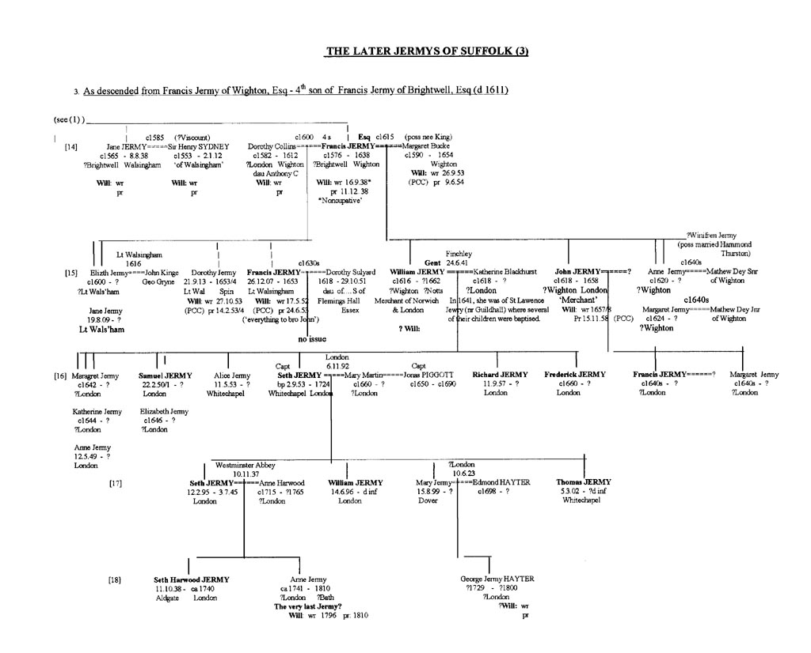

Sir John's eldest son Francis Jermy of Brightwell, Esq, apparently unknighted, may have been the first of the family to have a university education - entering Trinity Hall, Cambridge in 1551. He married the daughter of an Irish knight - Elizabeth Fitzwilliam, about 1554. He would be elected High Sheriff of Suffolk in 1586 - a role most respected and educated gentry in each county were expected to fill at least once - for a year's term. This and the consecutive marriages during Queen Elizabeth's reign of eldest Jermy sons with daughters of knights seems to imply that this period was the acme of the Jermys' power and influence - at least in Suffolk. Financial constraints seem to have gradually weakened their position after this 'golden age' during the reign of Elizabeth. Francis had two or three brothers and three sisters which the family finances had to assist in future marriages. Moreover, he was himself to have four surviving sons.
 The eldest son of Francis and Elizabeth (to carry on the senior line) was the later knighted Sir Thomas Jermy born about 1560 - not long before Francis' father Sir John had died in London as described above). The other sons of Francis were William, John and Francis Jnr- born about 1565-75. It was during this period - on 11 Feb 1572/3 - that Francis Snr wrote to John Parkhurst, Bishop of Norwich, asking him to revoke an error whereby his Chaplain - Richard Heywoode (MA Oxford, 1567), the Vicar of Gosbeck - had been deprived of his living, when someone else had been wrongly instituted in his place. Francis died at a goodly age in 1611 when eldest son Sir Thomas would, we presume, inherit much property - at and near Brightwell and Metfield - and possibly others long associated with his senior line (at Gosbeck, Coddenham, Tharston, Capele, etc).
Thomas had entered Jesus College, Cambridge in 1577 - obtaining his B.A. in 1581 when described as 'first in the ordo' (highest grades?). He settled in Teversham, Cambridgeshire (the family's one incursion into a neighbouring county - outside their Norfolk/Suffolk 'homelands'). He had acquired this and property at Undley in nearby Lakenheath through his wife Joan Styward, daughter of a Cambridgeshire knight. Knighted himself in 1603 (K.B.) - as were many that year by the new king James 1st - he was soon elected High Sheriff of Cambridgeshire in 1606. However, Sir Thomas appears to have been less competent at maintaining the family's Suffolk holdings - so carefully expanded over the centuries - than were his predecessors. Estates were gradually sold (c1611-20) to re-pay debts which arose through borrowing from the money lenders of St Clement Danes near the Courts in London (as described in later litigations). Possibly he borrowed in part to pay for the knighthood? Or was it gambling debts ? In addition, he and his wife had a large family of 11 children - mostly baptised in Teversham - and to promote marriages for them would also require funds. The eldest son, born after 4 or 5 daughters, was his namesake, but never knighted, Thomas Jermy, Esq - born in 1593 (baptised 7 Oct). There would also be three further sons born to Sir Thomas by 1600 - as discussed later. He seems to have died in about 1618-20. (Why no Will or Administration ?)
Meanwhile at nearby Stutton, a sub-branch of this senior Suffolk line at Brightwell had become established. Francis's younger brother, John Jermy, Esq married Margaret Isaacs of Kent around 1565. There would eventually be five generations of Jermys at Stutton - thus outlasting their 'seniors' of Brightwell, Teversham and Metfield. John and Margaret had a large family at Stutton over a 20-year period (c1565 to 1585). [Note: White's 'Suffolk' states that Stutton Hall was built by Edmond Jermy which, if correct, would place the family's ownership of this manor somewhat earlier - ie from around 1505, say; if so, Sir John Jermy, the present John's father, may have resided there himself although, as mentioned, he also built a 'mansion house' in Sprowston, Norfolk about 1520.] John's eldest son would become Sir Isaac Jermy (born c1566) who entered Trinity College, Cambridge in 1582 and also attended Gray Inn from 1584. He married firstly Jane nee Palgrave (of a Norfolk family), widow of Robert Lawrence, Esq - on 18th June 1598 in Norwich - by whom he had a son John Jermy in 1601. Isaac was also knighted - in 1604 (as were many by recently crowned King James that year; he was in need of stability in the provinces).
Isaac's father - the earlier John Jermy 'of Brightwell Hall, Esq' (rather than of Stutton) may be the one whose PCC Admon, dated that same year - 1604, was granted to his brother Francis Jermy. I had him dying in 1592; this may need to be confirmed one way or the other. Also, Isaac's entry in Venn has his father as 'probably Sir John Jermy of Stutton'; this too needs further analysis. There also seems some uncertainty regarding a 'Sir John Jermy' shown in the Complete Baronetage (1900) as born ca 1587 in Brightwell and marrying ca 1610 one Margaret Saye, daughter of Sir Thomas Saye, with whom he had a daughter Frances Jermy ca 1613 in Brightwell. Said Frances is then shown as marrying ca 1633, Sir John Barker of Grimston Hall, Trimley Suff, 1st Bart and Sheriff of Suffolk, 1621 and their son, also Sir John Barker, 2nd Bart, as marrying Winifred Parker in Kettlebaston (a Barker and, later, Jermy stronghold) in 1658. They in turn had a son Sir Jermy Barker, 3rd Bart who died aged just 11, a year after his father.
This source does not show to whom this Sir John Jermy of Brightwell was born in 1587 but we may note here that the eldest son of Francis Jermy of Brightwell, Esq was the later knighted Sir Thomas Jermy born there ca 1560 who settled in Cambridgeshire and whose eldest son was Thomas Jermy, Esq - not born until 1593 and who eventually settled back in Metfield. Francis did have a younger son John but he was born about 1572 and was not knighted seemingly (this may need confirming). Francis also had a younger brother named John Jermy - sometimes shown as 'of Brightwell, Esq' who soon settled at Stutton where his eldest son was Sir Isaac Jermy, born ca 1566. Again, any younger son John was not knighted. [Note: we have Frances Jermy as a daughter of Sir Thomas Jermy, born ca 1587 (but possibly a decade later)- still a generation earlier than the Baronetage entry; she did marry a Sir John Barker but probably around ?1620 rather than 1633. These and subsequent dates in that line may need to be further verified.] We may mention here that Eleanor Jermy of this Stutton family would marry her distant cousin John Jermy, senior member of the Norfolk Jermys - as his 2nd wife - around 1595, while her sister Mary married John Allen (who would write up the latter's Inq PM (1631) - and whose son (it would appear) later worked at the Six Clerks Office in London ca 1650s/60s (where an Edward Jermy of the Gunton branch was also employed 1668-74).
 Isaac's wife Jane died in 1623 and he re-married - another widow - Elizabeth nee Waters, the widow of Robert Broke of Nacton (near Stutton) in 1627 - oddly again in Norwich. They appear to have resided in Ipswich, as well as at Stutton. An aunt of Isaac's - Elizabeth Jermy, daughter of Sir John of Brightwell - had married Richard Broke of Nacton a generation earlier. Sir Isaac was buried at Stutton in 1634 and in his Will proved that year he...[to be added]. His wife Dame Elizabeth Jermy outlived him by 11 years, dying in London and also leaving a Will (1645) in which she left small amounts to her two daughters, Anne Bacon, widow and Frances Coppin, wife of Thomas Coppin, Esq (these presumably from her earlier marriage), and to an unidentified John Wright - £3. In 1641, she had owned a home in Nacton, Suffolk and in Cripplegate, London - which were likely settled on her children prior to her death.
 Sir Isaac Jermy had several sisters - who appear to have married well - and four brothers who may or may not have lived to adulthood - namely, John, Jeremy, Joseph and Thomas Jermy ; little is known of them. There was a John Jermy who, with wife Martha, had issue in Cratfield (three miles south of Metfield) - namely, Cissily and Mary - in 1579 and 1581, respectively. This was seemingly too early to be Isaac's younger brother John (born, it is thought, about 1572) and in the wrong part of the county to be the father John himself who, in any case, is believed to have had his large family elsewhere (in Stutton) - ie in the event that the mother's name was mistaken for Margaret). This Cratfield John would be born about 1550-60, say and may have been a younger cousin of Francis of Brightwell - as, eg a grandson of the William Jermy who married one .... Randall. Or, was he the third son of Francis ? Otherwise, I see no obvious origin for him. Did he have a son born ca 1580s and marry ca 1610, etc? [It was later noted that the gentry family of Lany resided at Cratfield into which (at Pulham, Norfolk) an early Elizabeth Jermy married; was this John Jermy a relative?]
[Note: A Thomas Jermy of Halesworth born ca 1685 had an Attorney named Girling (a name noted at Cratfield) handle the Admon for his namesake son, who died while seving in the early Navy. Might the earlier John Jermy of Cratfield (b c1560s) be a source of the Jermys of nearby Halesworth and area, including this Thomas, as referred to elsewhere? One notes that a Thomas Germy (born c1685) had issue baptised at Walpole, Suffolk Independent church (also nearby) in 1711-16, including two Johns (although no Thomas was noted). Equally, one wonders from whom a John Jermy born about 1675 might descend, he the father of an Isaac Jermy who apprenticed as a Taylor in Halesworth in 1720. [See marriage of a John Jermy with an Katherine Isaacs in Halesworth about then. The Hearth tax returns for Suffolk in 1674 shows that another John Jermy had 3 hearths in nearby Beccles (where Jermys continued some generations) and there were other Jermys (two widows and two Williams) with 2 and 3 hearths in such as Debenham, Mendham, Heveningham, Blythburgh and South Elmham that same year. These are all near Metfield in north Suffolk and quite intriguing. Their fathers or father-in-laws would be born around 1600-20, say - but to whom?? Some of these tax payers left Wills over the next few years - as John Jermy of Beccles - in 1675, two other John Jermys of Blythburgh and Mendham - in 1710 and 1711 - and finally, a William Jermy of Halesworth - in 1705. Also, a John Jermy married an Elizabeth Girling in Halesworth in 1821 from whom descended other Blacksmiths and Tailors: John, William, Thomas and Robert Jermy (born Haleleswoth in the 1820s). John moved to nearby Leiston where he was an Engineer and has 2 sons. All these, and others, need examining re their origins and descendents. There were of course Jermyns (some called Jermy) in south Norfolk then - spreading south from Hempnall. Could they be the origin of some of the above mentioned 'Jermys/Jarmys'? Or...? See also later in regard to the Halesworth 'Jermys'. [Note: This paragraph will be copied and placed there also since its contents may prove equally relevant in that regard.]
Meanwhile, Sir John's third son William Jermy (born c 1542) was described as 'of Stutton' in 1560 when about 18 - presumably living there with immediately elder brother John - after their father had died that year. He doesn't appear to have married or left issue. [Did John move To Cratfield ?) The next brother - Henry Jermy (born c 1547) - paid a Subsidy tax at Brightwell when aged about 21 - in 1568 - where he was also provided with a residence. His brother John paid for land at nearby Waldringfield that year. A Henry Jermy (?Jnr), born around 1580 or so - probably to the aforesaid Henry (a baptism should be locatable for him) - married Ann Baker in neighbouring Newbourne in 1613 - soon after Brightwell was sold by Sir Thomas Jermy. As a widower, he later re-married one Elizabeth Blosse, widow, in 1622 in neighbouring Martlesham - of which place he was said then to be. Interestingly, there is a Hall near Gosbeck called Blosse's (her first husband's name) although this Elizabeth was then 'of Dovercourt, near Harwich. Henry married a third time - to a Rose Tanner, widow - again in Martlesham but then appearsto have settled as a Yeoman at Wetheringsett cum Brockford, where he left property by his Will in 1655 (although signing 'his mark') and had, amongst others, a son Henry Jermy. (A Yeoman would be a manager - of his own small farm. If he could acquire sufficient land to support a hired manager/farmer and/or obtain rent for some of his land, he would seek to be styled Gent. Only if inheriting or purchasing a larger estate - usually with a Hall or Manor House - and receiving considerable rent for, say, 200 acres or so (or having the equivalent income from investments) would he be meaningfully accorded the status of Esq. Most Knights would be of this level or above.) This Henry's wife Rose also left a Will - in 1656 (I believe). [Did son Henry marry and have issue ca 1670s? And did eldest brother John Jermy move to Cratfield] after their uncle Thomas Jermy sold Brightwell, where he and his brothers had had been previously residing ?]
Finally, a fourth son (and thus Francis's youngest brother) - a Thomas Jermy appears to have been born to Sir John - in about 1550. This may well be the Thomas Jermy who married twice in Aldeburgh - in 1580 and 1593 - a small town on the mid-Suffolk coast. One wonders what occupation, if any, such a very 'youngest son' pursued; he would be unlikely to have much capital or property behind him with which to attract a wife - especially one who had property herself. It is not known if he had any issue there (this to be checked). I did note that a Robert Jermin was assessed for 4 hearths in 1674 in Aldeburgh. If born around 1620, say, he may have been a grandson of this Thomas. Such a shift in the spelling of the name, if maintained (as education lessened) could make any subsequent tracing of this line difficult. Might other 1674 hearth tax payees of north-east Suffolk (named Jermy at least - see above) also have this origin? [Note: There was a later Robert Jermy who married in Worlingham in the 1750s but he quite possibly derived from the Jermyn family of the Pulham/Hempnall area of nearby Norfolk. Even later, a labourer, Robert Jermy - born Beccles in 1791 - joined the 43rd Regiment of Light Infantry in Gosport, Hants (ex ?mariner), served 30 years therein, latterly as a 'Color Sarjant' and retired to Ipswich.]
Suffolk Jermys of the 1600s.
In the meantime, the family at Stutton continued on - with Sir Thomas's cousin Sir Isaac who, from about 1601, had sons John, Edward and William and a daughter Mary. The elder boy, who became John Jermy, Esq, entered Emmanuel College, Cambridge in 1619 and Gray's Inn the following year. He seems to have married around 1630 - to ?Mary, daughter of Sir William Rowe and had a son William Jermy at Stutton in about 1634 - who also entered Emmanuel and Gray's Inn - in 1652. They also had two daughters - Anne and Elizabeth. This John Jermy was buried, aged 61, on 23 Oct 1663 in the Chancel of Stutton church - next to his mother-in-law, having written his Will on 28 Feb 1662/3. In it, he left most of his possessions (pewter, furniture, plate, horses and hop poles!) to his wife; to his married daughters Anne Norton and Elizabeth Knowles he left just 10 pounds each, and to his brother Edward and sister Mary Harold but 5 Pounds each. John's son William was to be sole executor. The Will was proved 7 Dec 1663. Any property was likely transferred earlier. He doesn't sound an overly prosperous man. [Note: this John Jermy should be distinguished from John Jermy of Gunton - of the Norfolk branch - who, as a much younger man, also wrote his Will and died about this same time - 1662/63. It may be pointed out also that a local historian shows the Stutton John to have died in 1662, not '63, with a wife named Martha, not Mary. Interestingly, we may recall the 'floating' John Jermy of Cratfield near Metfield, with a wife Martha.]
John of Stutton's ?only son, who then became William Jermy,Esq was a J.P. who married firstly Mary, daughter of Philip Bedingfield of Ditchingfield, Esq in south Norfolk and secondly Anne Boys, a widow (nee Borington) by whom he too managed to produce just one surviving male heir - another John Jermy (and Esq to be) - in 1669 - shortly before his own death on 6 Oct that year, aged just 35 - his Will dated 2 Oct 1669 and proved shortly after. His wife Ann, however, would live another 16 years.
William's Will was proved in late 1669 - with references to his infant son John (destined to be the last Esq of the Stutton line) and to daughters Elizabeth and Mary, and to his own sister Elizabeth Knowles. He too was to be buried at Stutton - with a funeral 'costing no more than £30' - with no Sermon. The 1674 hearth tax record shows Stutton Hall still owned by 'Madam Jarmin', however, when it had an impressive 17 hearths. But the family's previously unremarkable capacity to produce male heirs (and coincidentally maintain the family's finances) was, for whatever reason, becoming increasingly difficult - in most branches of the family, both north and south. Thus, the latter John Jermy of Stutton, Esq who did marry, also failed to produce issue. His mother Ann Jermy (ie the aforementioned 'Madam Jarmin') died a widow in 1685 - shortly after dictating a verbal Will in which she asks her servant to sell her personal possessions to pay her just debts. No property is mentioned. Her son John is described as a minor at that date, being just 16. He did inherit the estate but seems to have 'sold' it in 1690 - ie as soon as he turned 21 - for a token 10 shillings - probably to Trustees -'for his own use'. Thus, he was still described as being 'of Stutton Hall' in 1694 when he married in London - to Frances, daughter of Sir George Dalston of Soho. The sale may have been a way of protecting it from creditors. John was possibly married previously (ca 1691), for a short period, to the daughter of one Sir ...Fisher. I believe his wife Frances re-married in 1708 - to Sir William Halton, Bt - which would indicate that John Jermy, last of the Stutton line, died before that year (ca 1705-07, say) - this requiring confirmation. Did he leave a Will? Was Stutton soon re-sold and to whom?
Thus the cousins Sir Thomas Jermy of Brightwell (and later of Teversham) and Sir Isaac Jermy of Stutton had eldest sons Thomas Jermy and John Jermy, respectively. And while the latter John did have the son William (and grandson John) at Stutton, as described, Thomas failed to have any male heirs - which thereby brought to a close the more senior Jermy line first - established so long at Metfield, and at their other Suffolk estates; Brightwell, for example, having been sold by his father about 1640, I believe, to a Sir William Hewitt (d 1667)). Later that century, the Hall there (with 26 hearths!) was owned by the Barnardistons. None of the younger sons of Sir Thomas or Sir Isaac appear to have had surviving male issue, although the early Civil war period saw many registers poorly kept.
Sir Thomas's next brother (and Francis of Brightwell's 2nd son) was William Jermy - born about 1568. He may have been at Jesus College, Cambridge from 1584. He married Anne Rede, daughter of George Rede of ?Rendlesham, who had married firstly Francis Jenny of Knodishall, Esq in 1586 (not far from Aldeburgh) who soon died - in 1590. Through Ann, he seems to have acquired property at both Knodishall - where his son Rev George Jermy would later have the living - and at Worlingworth which was in mid-Suffolk (near Brundish)- unless this came through a second marriage? He too had a fairly large family - of two sons and five daughters. But his elder son Francis Jermy Gent, had an even larger family than the 11 of his uncle Thomas - having 14 children! Thus, the Brightwell-Metfield Jermys appeared to be on the crest of a population explosion over the next few generations as all these children, especially the sons, had their sons and grandsons in turn. And other branches of the family were of course also producing a number of potential progenitors. And yet and yet...within just two or three generations, all this was to fizzle out - inexplicably - as discussed further below.

William lived during the later Elizabethan era - initially at Brightwell, then at Knodishall and finally at Worlingworth - where the register shows him consistently as 'Gent' rather than Esq, at his children's baptisms. Through much of this period, his father Francis, who was an Esquire, had remained at Brightwell - still the senior family seat - while his elder brother Sir Thomas was having his family in Cambridgeshire. His younger one John Jermy (born c1573), who entered Cauis College in 1589 (B.A.1592), was admitted to Gray's Inn, London in 1593 and possibly settled in Norwich while the youngest brother Francis was settled near Walsingham, north Norfolk. The family was thus becoming considerably more dispersed at this time - as we enter the reign of James 1st. After Francis Snr's death in 1611, his eldest son Sir Thomas appears to have sold 'Jermy's manor' at Tharston (held since 1303) to the Cocke family (ca 1611) - a daughter of whom would marry into the Jermy family of Bayfield, Norfolk. [However, Robert Cocke's name is apparently associated with Tharston from 1609, possibly initially as a tenant? Otherwise, Francis himself may have sold it earlier.]
William's elder son Francis Jermy, Gent (born ca 1590) would have been raised at Worlingworth and, after attending Caius college from 1608-11, soon married - Elizabeth Bateman, daughter of Thomas Bateman of Flixton - in 1613. This was at the old family seat of Metfield which appears to have been their home for the first five years of their married life. This seems to have been a pattern for some time - that younger sons, brothers, uncles utilised Metfield as needed, otherwise it was rented out. Francis and Elizabeth had 14 children born into the 16th generation - the first three baptised at Metfield, then seven at nearby Wissett (held by the Jermys from the 1470s and by the Bigods previously) and the last three back at Metfield. (Of course, they may have resided throughout at Wissett - and simply used Metfield church for some baptisms; the converse seems much less likely.)
Of Francis Jermy's 14 children, 10 survived childhood, including five sons - and yet, remarkably, there appears to have been no further issue from the latter - ie in generation 17. However, they would again have married and had any issue during the Civil war and Commonwealth periods when many parish registers were not well kept; this certainly needs further research and analysis. Where did those sons (Thomas b 1619, Edward b 1627, Robert b 1633 and Henry b 1635) settle? With a father who was educated at Cambridge, we not expect them to have descended too quickly into a labouring clsss. Might their sons in turn (if any) born ca 1640s-60s lead to the skilled Jermys of Halesworth and area (born ca 1670s-80s), which was immediately next to Wissett ? The forenames William and Thomas (born ca 1670s) certainly appear there, with the latter having a son Robert in 1704. The father Francis died about 1650, I believe (this too in the Commonwealth period) and his wife ca 1679. In 1659/60, she was 'of Kettlebaston' - residing with her recently married daughter Katherine, who had married into the Barker family there (as had an earlier Frances Jermy in ca 1633). There would be other Jermys at Kettlebaston through their Barker connections. It was their son, Sir John Barker, 2nd Bt, Sheriff of Suffolk in 1654, whose first son was Sir Jermy Barker, 3rd Bt, who died young ca 1665, just a year after his father .
Another Frances Jermy (born ca 1612), eldest daughter of William's son Francis and wife Elizabeth died in 1659, leaving a Will as an unmarried woman in her 40s, living in Gillingham, Norfolk (possibly with Nicholas Bacon, Esq and family who had also married into the Barkers) - just across the border. Besides bequests to the Bacon family, she also left her mother Elizabeth - by then 'of Kettlebaston, Suffolk' - a significant £550, and her sisters Katherine and Mary £100 each. To her brother William Jermy 'of London', also in his mid-40s then, she left £50. Nothing else is known of him. [Did he not leave a Will?]
The next brother after Sir Thomas and William was yet another John Jermy, Gent - ie Francis of Brightwell's 3rd son - born about 1574, who appears to be the John who entered Cauis in 1589 and later Gray's Inn. He never married apparently - before dying and being buried at Metfield in 1642, near the start of the Civil war. He may have resided at Metfield during the 1630s - while his brothers were settled on their other estates; a John Jermy was a 'Steward of Norwich' in 1629-31 who may have been this John, although John of Gunton is also a possiblity here. However, just before he entered Cambridge, his elder sister Jane had made a good marriage - in distant north Norfolk - to Sir Henry Sydney of Walsingham. This was probably the basis for the subsequent marriage in the same district of the youngest (and 4th) son of Francis of Brightwell - also Francis Jermy (born c1576) although not of Esq but of Gent status. He married firstly Dorothy Collins (c1600) by whom he had 3 daughters and a son and secondly Margaret Bucke, a widow also of north Norfolk, with whom he had 3 more daughters and two sons - discussed further below. Again, the proliferating Jermys promised an ever expanding family network. They seemed to be everywhere. And yet, just a century later, they would be almost nowhere.
Suffolk Jermys in South Norfolk in the 1600s.
The second son of the earlier William Jermy (of Knodishall and Worlingworth and thus the younger brother of Francis of Wissett) became theRev George Jermy (born 1598 in Worlingworth). He too attended Cambridge (Emmanuel) - in 1614 - later transferring to Queens in 1617, where he gained his B.A. in 1620 and soon ordained a Priest - in 1621. He was later Rector of Knodishall where he and wife Euodia, who married in 1621, had 8 children baptised over the next 25 years. He officiated at the marriage of his sister Martha (to Philip Tyacke) at Knodishall in 1622 and most of his children were eventually married there also. Finally, there was a son Robert Jermy born to William in 1640. He married in Knodishall and had two daughters only (apparently). Thus, there seems to be no further Jermys beyond this 17th generation from William's line although, again, this need confirmation (and see also the account below regarding Rev George's second son Thomas). Rev George Jermy was buried at Knoddishall in 1679.  Rev George's eldest son was Benjamin Jermy (born 1622) who married a Dorothy..... about 1650 and, after having a daughter Elizabeth (1654) and a son John Jermy (1655) in Leiston (her village?), had two sons (where?) named after his father - George Jermy, one dying in 1664. Any future for the son John or later born (c 1670) George is unknown. We note that both an Elizabeth and a John Jermy were buried in Knoddishall - in 1663 and 1680, respectively. Rev George's next son, the future Rev Thomas Jermy, wasn't born until 1637. He too entered the church after Cambridge (Queen's 1654-57) and married in 1659 one Sarah Kinge. He became Rector of Hethersett in Norfolk (about 5 miles south of Norwich) on 1 Feb 1660 and a few weeks later his first son, also Thomas Jermy, was born there - on 17 Apr 1660 - followed by a daughter Mary in April 1662. Lucy was then born to them in Aug 1664 and a son George followed in Oct 1666, but died just 3 days later. There were also daughters Sarah and Martha born shortly after, as well as a second George Jermy born early in 1669. He appears to have survived childhood but, as with his cousin of a same name and similar age, his future is also unknown. The Rev Jermy's time at Cambridge (mid 1650s) and later career in the clergy matches in part that of his distant 'cousin' Rev Anthony Jermy at Gunton. But Thomas Snr died in February 1669/70 (some 9 years before his father) and was buried in Hethersett. The younger Thomas Jermy died soon after - in 1672 - aged about 12, the entry entered retrospectively by a later Rector who noted that the register hadn't been propery kept over the 2 years following Rev Jermy's death. His widow Sarah re-married there (to a John Button) on 10 July 1677 by licence. The daughter Lucy also married in Hethersett on 9 Oct 1690 to a John Fisher - 'by licence from the Chancellor's Office'. [We shall note later that members of a rather distant cousin line of the Jermy family (ie of Marlingford) were, quite amazingly, also settled for a time in Hethersett during these same decades of the 1660s-90s, before migrating to Ingham in north Norfolk.]
Suffolk Jermys in North Norfolk in the 1600s.
We may consider further the 4th and youngest son of Francis Jermy of Brightwell - his namesake Francis Jermy, Gent - born about 1576 and, like his brothers Thomas, William and John, brought up at Brightwell in the latter years of Elizabeth's reign. Francis Jnr may have attended Cambridge but I haven't evidence of this as yet. He married around 1600 Dorothy, a daughter of Anthony Collins, seemingly of London, by whom he appears to have had one son - yet another Francis Jermy (born 1607) and three daughters - before Dorothy's death in 1612/3. He re-married - Margaret Bucke, a widow of the Wighton area of north Norfolk, by about 1615 with whom he had two more sons - William Jermy (c1616) and John Jermy (c1618), and three more daughters.  As mentioned earlier, Francis seems to have settled in this area of Norfolk due to the influence of his brother-in-law Sir Henry Sydney (who had married his sister Jane Jermy) and would have been a part of the gentry's social life of the Walsingham district, with its religious importance at that time - just before the Civil war. She, as Dame Jane Sydney, remembered her Suffolk family in her Will at that time - leaving bequests in 1638 to Thomas Jermy and Francis Jermy, both still 'of Metfield', although the bulk of her estate passed to Robert Sydney, Earl of Leicester. With her husband, she is buried in Lt Walsingham church under rather ornate tombs. Sir Henry Sydney had acquired much of the former Heydon estates of north Norfolk. Several of the Walsingham/Wighton family of Jermys died in the 1650s - when life after Cromwell (during the 1640s) was probably not as convivial for such Anglican high church supporters as it had been prior to the War.
Francis Jnr's eldest son - the 3rd Francis - went to Pembroke College, Cambridge (in 1624) and gained his B.A. (1628). He married another Dorothy - Sulyard, of Essex (c1633) by whom he appears to have had no children before dying in 165 1/2 (in Walsingham?), his Will proved 24 June 1652 (PCC) by his brother John Jermy. His wife Dorothy Jermy of Wighton, widow died soon after and her Will (also PCC) was proved 14 Feb 1653/54. His sister Dorothy Jermy (the third of this name) followed soon after - in 1653/4, unmarried. [Check to see if any of these Dorothy Jermys held land at Gimingham, near Gunton; I doubt it.] The elder Francis's second and third sons - William and John - would appear to have received neither university educations nor property and so, unsurprisingly, had to make their ways as best they could - as London merchants. Both would marry and have male issue. This William's line would thus prove the most enduring of all later branches deriving from Suffolk - lasting well into the 1700s, at least and maybe later (see below). His mother Margaret Jermy wrote her Will 26 Sept 1653 asking to be buried in New Walsingham near her late husband Francis. It was proved by her younger son son John on 9 June 1654. His own Will - as John Jermy of St Andrews Huberts, Lt Eastchapel, Merchant, was dated 7 Jan 1657/8 and proved later that year (PCC). [Did elder son William not leave a Will?]
The End of the Senior line of Suffolk Jermys at Metfield.
We may now return to the senior line of the Suffolk family - that is, to Sir Thomas's eldest son Thomas Jermy, Esq (born 1593). [Refer to earlier pedigree near beginning of this Part.] He might reasonably be expected to have married by ca 1620, say (when aged 27), but for some reason delayed this until about 1640 (after much of the estate had apparently been sold) - by which time, most of his siblings had already married. He eventually married Anne, daughter of Ambrose Duke, Esq - of Benhall, Suffolk - and widow of Thomas Smallpiece of Worlingham, Suffolk (also of Norwich), Esq. Seemingly, Thomas needed to find a wife with some financial backing. She had two sons from her previous marriage but sadly would have no further issue with Thomas Jermy. Thomas appears to have inherited the entire estate on his father's death, apparently around 1618, although oddly no burial detail or Will is apparent for him. [He must have died intestate for an Administration was granted for him in 1618.] According to his wife Dame Joan, who subsequently took their son Thomas Jnr to court in 1623, the latter man had soon sold much of the estate (c1618-20) and used the proceeds unreasonably for himself and to pay off a few creditors, thereby ignoring the needs of herself and his many siblings. He was later described (c1627) as having 'departed this realme to avoid creditors' (typically to Ireland or Holland). She then sold some of her own property (her joynture) to assist him (with about £3200) - on the understanding that she could retain £1000 for herself and the other children. He agreed and was thus able to marry (eventually) when all this had subsided and he at least had Metfield left, apparently with fewer debts. Thus, he signed the Metfield register as a witness and churchwarden on several occasions in 1640-'42, so seems to have resided there from the late 1630s. However, Davy shows that the Metfield Manor Court was held in 1642 and '43 (when the country was in turmoil due to the early civil wars) by John Barker, an 'in-law'. Before this period, Thomas Jermy's cousins John and/or Francis and his large family of about a dozen children (otherwise of nearby Wissett) appear to have lived at Metfield for a time (or did they just used the church for baptisms?. In any case, so many young Jermys - at one place and time; where would all their Jermy sons and grandsons be two generations hence? As mentioned, this needs analysis - in Suffolk record offices.
Sir Thomas's second son Edward Jermy, Gent was born in 1594, entered Caius College of nearby Cambridge in 1612 and married Mary, daughter of Robert Spencer of Rendlesham, Suffolk in about 1618. They settled at Teversham also where the family had resided from about 1590. [Note: An Anne Jermy had married in Cambridge (St Edward) on 15 Nov 1631 to a William Longe (or Linge) while a Lucy Jermy married in St Michael's in that town a generation later - to one Robert Howard on 23 Oct 1670. Thirdly, a family of Jermys lived at nearby Carlton cum Willingham, Cambs around the year 1600 who, like this Anne and Lucy appear equally unaccounted for.]
Some insight into the family at this time is provided by a Chancery Proceeding of 3 July 1633 (PRO-C3/406/52) in which Edward is Complainant. It reads: “About fifteen years ago (ie c 1618) Edward Jermy of Teversham, Cambs did borrow from William Melton the elder of Metfield, Suffolk, Yeoman, the sum of £10 - for the use and employment of his brother - Thomas Jermy - and, for the secure future re-payment thereof, Edward did become Bound by a Bill of Obligation unto the said William Melton, who was then tenant Farmer unto Dame Joan Jermy of Teversham, Widow, Edward's mother, of lands in Metfield and Withersdale, Suffolk - at an annual rent of £50 and it was agreed that if Dame Joan would reduce his rent by £10 - for one year - then the said borrowed £10 needn't be re-paid by Edward. Later, in about 1626, William Melton the younger came from Metfield to see Dame Joan - in her house at Teversham - about rent arrears (it seems that the balance of £40 wasn't paid either) and Edward now asks the Court to Subpoena both William Meltons, as they still owe their rents.” While Joan (and Sir Thomas) held Undley, some 10 miles to the north, they appear to have resided mostly in Teversham. They may also have held the Manor of nearby Chesterton which their son Edward and/or his daughters Joan and Elizabeth seem to have later inherited or acquired. [Sadly, Edward appears to havee had no son.] Joan married there to John Rant 28 Apr 1659, while Elizabeth left her 'moiety' in same to her sister Joan's son John Rant, Esq (by her Will of 1713) from which he was required to pay her other sister - Sarah Disbrow, widow - £200 and £20 per annum. Interestingly, a William Jeremy was also married in Chesterton - on 30 Apr 1628 to an 'Annis Wicksted' (possibly a mis-reading of 'Annie'?). Might this William be Edward's brother - soon to emigrate to Lower Norfolk County, Virginia? If so, did Annie accompany him (quite possibly); and did they have issue there? Seemingly not. Moreover, William was said to be 'of Kettlebaston' when he emigrated. When did he leave the Teversham area for Kettlebaston - and why? [Probably because his mother and cousins were sometimes there.]
[Thanks to a comprehensive account of life in Lower Norfolk County, Virginia during the Commonwealth period (by R.W. Baird), we have at least one item pertaining to this William Jermy, 4th son of Sir Thomas and Lady Joan Jermy. A fellow citizen in the area - one Thomas Ivey (and I quote) - "..died sometime between 15 December 1654, when he served on a jury, and 25 January 1654/5 when George Kempe, his “great creditor”, was appointed administrator of his estate. The appointment of Kempe suggests that there were no close relatives in the area, and that all the children were minors. On 15 February 1654/5, an inventory of Thomas's estate was ordered on behalf of his creditors and “the poor distressed orphans”. An unusually large number of people were appointed to take the inventory, suggesting that several were creditors: Thomas Willoughby, Thomas Lambert, Richard Conquest, Lemuel Mason, William Langley, William Jermy, and Jasper Hodgkinson. (All but the last two lived in the same district as Thomas Ivey; William Jermy was the clerk of the court, Hodgkinson is unknown to me". (my italics) One will seek any other information about William from this source - especially regarding a possible marriage and any issue. The apparent absence of further references to the surname Jermy at that time, in that area, does not however auger well in this regard. According to Valdar, William died without surviving issue in 1666 in Lynhaven in that county. Mr Baird referred to a Will by William Jermy in which a wife Ann is named but no issue. She could well be the Annie Wicksted mentioned above. Thus, there would be no continuation of the Jermy family in America, even if it was to cease in England.]
Dame Joan had died, aged a remarkable 87, in 1649 - being buried as 'The Lady Jermy' on May 9th 1649 in Kettlebaston - which estate and area appears to have become a centre for several of the Suffolk family during and just after the Civil war period. Her brief Will - written 2 Mar 1648/9 - leaves a little to the poor of Teversham, Cambs and something to her daughter Dame Elizabeth Waldegrave, widow (nee Jermy - born 1583, possibly in London, who had married Sir George Waldegrave of Hitcham, Suffolk nearby) and to the daughters of her son Edward Jermy (1594-1644). These were Joan (1636-1663), who married John Rant of Teversham, and Elizabeth, who married Thomas Payne of rather distant Itteringham (just behind Blickling Hall nr Aylsham), Norfolk (unless this was a similar looking name in Suffolk?) There was no reference to her third son John (born 1597) who seems to have married Elizabeth Honings in Darsham, Suffolk in 1622, nor to any issue thereby. Around 1635-40, this couple brought a Complaint against a John Sotherton, Esq and Wingfield Honing (Elizabeth's uncle) concerning property in Eye, Suffolk (former Priory lands there). Nor did Joan refer to her 4th son William, who had already emigrated to America.
[Note: the above reference to Dame Joan leaving 'a little to the poor of Teversham...' is itself not very revealing. It appears that she in fact left about 15 acres of land in Teversham to this end, the income from which was to be divided between the poor and for the education of children there (or at least the trustees of said charity (later referred to as 'Jermy's Educational Foundation') so directed that income for many years - ie up to and beyond 1860 and 1907 - at which times the stipulations of the bequest had been re-evaluated for modern circumstances. But, by the early 1930s, the parochial school in Teversham was in gross disrepair and the small population of the village couldn't afford to repair it. The local Vicar, reviewing the original Charity details (now administered by the Charities Commission), made a case for diverting its funds to re-building the school. A PRO document (ED 49/11399) contains the correspondence on this matter between 1936 and 1940 when, after selling the land for a then considerable £3000 (Cambridge was expanding), a new school was finally built by the Trustees. The capital was, however, to be replaced over a number of years by way of a long term mortgage. Later rationalisation of the thousands of such charities by the Charities Commission probably means that such schools are now entirely supported by general taxation. But the effects of 'Dame Joan's Charity' applied for an amazing 300 years.]
To return to the possible descendents of her family - an Anne Jermy married a William Thetford in Darsham in 1682 - having, it seems, paid her hearth tax there as 'Widow Jermy' in 1674. To whom would her former Jermy husband have been born - ca 1630s ? Possibly to that third son John and Elizabeth - in or near Eye, or...? One of Sir Thomas and Joan's daughters - Margaret Jermy - married John Risby of the Thorpe Morieux family. Their son John Risby Jnr married Elizabeth, daughter and sole heiress of Francis Cornwallis, I believe.
The 1674 Hearth Tax returns records a number of Jermys in the north-east of Suffolk (intriguingly near their origins) who are not readily derivable from the landed Suffolk family discussed thus far (see earlier reference to such; also later) and require further analysis. Did any slip our net? Thus, who was the John Jermy of Beccles for whom an Administration was dated 1675? A John Jermy had recently married Katherine Isaac there in 1668. And who fathered the William Jermy who, with wife Margaret, had a son William baptised in Halesworth in 1696 (and possibly a son John with a second wife Elizabeth there), or the Thomas Jermy who married Frances Partridge there in 1703 and named his first born Robert Jermy ? Were the latter two bothers born in the 1670s ? To whom ? And where ? We may note that a Blacksmith, Ralph Jermyn of nearby Wangford, left a Will in 1693 (Archd Suff); did it refer to any of these names? One of the early Halesworth Jermys was also a Blacksmith, I believe. In 1699, another John Jermy had a son John baptised in Blythburgh but he and his wives and most issue appear to have died within a generation. Was he the John who married Mary Thrower in Withersdale, once held by the Jermys, in 1697 ? In neighbouring Mendham, also a former stronghold, Frances, wife of a Robert Jarmyn, left a Will in 1661, but in Barsham, an Elizabeth Jermy who married Edward Ufford in 1695, was described as being 'of Woodton'. If this was Woodton in Norfolk, her name should probably have been recorded as Jermyn; did this transposing take place in other of these local 'Jermy' registrations therefore ? Significantly, there were Jermyns in the area as early as 1538(!) when a Richard Jarmyn of Benacre left a Will. The Blacksmith and Tailor 'Jermys' of Halesworth continued there through the early Victorian period but by 1881, we see there was but two widows and one daughter remaining. To where, if anywhere, did any of the skilled Jermy sons of Halesworth migrate ?
[Note: We place here a copy of a paragraph from above which covers much of this same material.] Thus, a Thomas Jermy of Halesworth born ca 1685 had an Attorney named Girling (a name associated with Cratfield) handle the Admon for his namesake son, who died while in the Navy. Might the earlier John Jermy of Cratfield (b c1550) be a source of the Jermys of Halesworth and area, including this Thomas, as referred to elsewhere? One notes that a Thomas Germy (born c1685) had issue baptised at nearby Walpole, Suffolk Independent church in 1711-16, including two Johns (although no Thomas was noted). Equally, one wonders from whom a John Jermy born about 1675 might descend, he the father of an Isaac Jermy who apprenticed as a Taylor in Halesworth in 1720. [See marriage of a John Jermy with an Katherine Isaacs in Halesworth about then. Also, a John Jermy married an Elizabeth Girling in Halesworth in 1821 from whom descended other Blacksmiths and Tailors: John, William, Thomas and Robert Jermy (born Haleleswoth in the 1820s). John moved to nearby Leiston where he was an Engineer and has 2 sons.] The Hearth tax returns for Suffolk in 1674 shows that another John Jermy had 3 hearths in nearby Beccles (where Jermys continued some generations) and there were other Jermys (two widows and two Williams) with 2 and 3 hearths in such as Debenham, Mendham, Heveningham, Blythburgh and South Elmham that same year. These are all near Metfield in north Suffolk and quite intriguing. Their fathers or father-in-laws would be born around 1600-20, say - but to whom?? Some of these tax payers left Wills over the next few years - as John Jermy of Beccles - in 1675, two other John Jermys of Blythburgh and Mendham - in 1710 and 1711 - and finally, a William Jermy of Halesworth - in 1705. All these, and others, need examining re their origins and descendents. There were of course Jermyns (some called Jermy) in south Norfolk then - spreading south from Hempnall. Could they be the origin of some of the above mentioned 'Jermys/Jarmys'? Or...? See also later in regard to the Halesworth 'Jermys'.
We may now return to the earlier landed Jermys of this part of the county. As suggested, that eldest son Thomas Jermy of Metfield, Esq and wife Anne were, after considerable indebtedness, ultimately solvent, with some estate to leave, is witnessed by another Chancery Proceeding (C2/Chas I/ I & J(11) /40) of 2 Dec 1647 in which they, as Thomas Jermy of Metfield Hall, Esq & Anne, his wife - Complaineth that: “...whereas Elizabeth Hobart (nee Moundeford) of Intwood, Norfolk, widow (of Miles Hobart - d. 1639) did by her Deed of Demise of 15 Nov 1642 - Grant, Demise and (to farm) Lett - to Anne Smallpiece, widow, the relict of Thomas Smallpiece, late of the City of Norwich, Esq - the Manor House and farm lands called Shadnells alias Cockenalls in Morley St Botolph, Norfolk (then occupied and farmed by Frances Cary, widow) - (ie as security for a loan of £200 advanced by Anne to Elizabeth) to hold by Anne and her assigns for 21 years at a peppercorn yearly rent - But, if this loan was repaid, plus £15 interest, by Dec 1st 1643, the said Deed of Demise would become then Void - Otherwise the said property would be forfeited to Anne and her now husband”. The implication is that the loan wasn't re-paid; No Answer appears in the indexes for this case. (These Hobarts were of the famous Blickling family; their second son, also Miles, being buried there in 1671.)
Thomas Jermy, Esq died in the early Commonwealth period - not long after his mother Dame Joan - in 1652, and was buried in Metfield church near his ancestor Sir John Jermy (d. 1405/6). With no children, he seems to have left his estate (such as it was) entirely to his wife. Having been in the Jermy family since 1325, one wonders why it wasn't left to his nearest Jermy brother, cousin or nephew? However, his next brother Edward had already died (1644) - with no male heir; the next brother John had also married but, again, seems to have had no son, while youngest brother William Jermy (describe as from Kettlebaston, Suffolk) had, as mentioned above, emigrated to 'Lynhaven, Lower Norfolk County', Virginia in 1635 and apparently died there in 1656 childless (although possibly having married in England; see above). [We now have the information that he did fairly well, becoming the Court Clerk there; see above.] In any case, the estate was apparently becoming a burden by this point and any more distant relatives may have been unable to take it on. Thomas's wife Anne died in 1657, just five years after Thomas and, not surprisingly, left it to her own elder son - Thomas Smallpiece. (The Morley farm, at least, was in any case hers). In her Will dated 29 Oct 1657, she described herself as 'of Metfield, Suffolk, widow', although was then residing at St Paul's Covent Garden, London, and directed to be buried within the parish church of St Sepulchre, London - to the poor of which she left £10, as she did to the same of Metfield and Withersdale. She left lesser amounts to four of her Duke relations. Her younger son Robert Smallpiece, was to be given £1500 from the Metfield estate, as soon as he completed an apprenticeship (possibly as an Attorney). The estate itself she left to her elder son Thomas Smallpiece and his male heirs - Thomas also to pay his mother's cousin Anne D'Oyley £12 per annum from that estate. The Will was proved on 17 Nov 1657 - in the late Commonwealth period. One wonders if the amounts to be raised from the estate (especially the £1500) were in fact realistic; it may have spelt its death knell.
However, the Jermy's possession of Metfield was not quite over since, in about 1654, the Rev Anthony Jermy of the Gunton branch of the family in Norfolk, appears to have been instrumental in arranging a marriage between Alice, the daughter of his elder brother Francis Jermy, Esq, also of Gunton (d. 1647) and Thomas Smallpiece (almost as if 'riding to the rescue' - from this forgotten Norfolk side of the family). Moreover, he became an executor of Thomas Smallpiece's Will on the latter's death in 1673 and trustee for Alice's children (she having pre-deceased her husband), between 1673 and 1680. Monuments on the floor of the belfry tower in Worlingham church read: 'Here lieth the body of Alice Smallpeece, wife of Thomas Smallpeece of Worlingham, Gent - one of the daughters of Francis Jermy of Gunton, Norfolk, Esq - Alice having departed this life the 26th day of May 1672, aged 36 years'. It continues: 'The body of the above-named Thomas Smallpeece lyeth buried near by - who departed this life the 22 day of April 1673'. With Anthony Jermy's trusteeship, Alice's son, Thomas Smallpiece Jnr could, conceivably, have changed his surname to Jermy (this procedure often done in such situations) and thereby continued the 'Jermy' ownership of Metfield. He wrote his Will 17 Apr 1673 - being then 'of Worlingham, Gent'. He gave his elder son Thomas Smallpiece Jnr all the lands that had been settled on his late wife Alice (nee Jermy) as her Joynture - these not including Metfield or Withersdale Manors themselves which he directed were to be sold by his executors (including Rev Anthony Jermy and Thomas Lone, Gent) - to cover various expenses and debts, the Remainder to go to his son Thomas and his heirs, but if Thomas died before 21 without heirs, then this to go to Anthony and Edward Jermy, brothers of his wife Alice, and their heirs - in equal parts, they to pay his brother Robert Smallpiece £30 yearly for his lifetime. He also gave £10 to his Godson Philip Howard (not long born), son of Philip Howard, Gent - also 'of Worlingham'. The Will was proved 18 June 1673. It appears that the debts and obligations on the estate were such that its sale did become inevitable and it was eventually sold - (via Joseph Fox?) to a local landowner Francis Sancroft - in about 1680. Oddly, Gunton, Marlingford and Metfield thus all ended as Jermy properties around this same period; only Bayfield held on - for a further century. There was however further litigation pertaining to Metfield - concerning funds controlled by various trusteees/executors over the following years.
Suffolk Jermys in Norfolk and London in the 1700s.
After 350 years, the Jermys' hold on Metfield had thus ceased, as had that senior branch of the family some years before. Moreover, from about 1660, with the restoration of Charles II, very little of the Suffolk side of the family appears to have survived. Most of the estates were now in others' hands and except for some (?temporary) resistance by one or two surviving sons and grandsons of the Rev George Jermy in Hethersett, and of Capt Seth Jermy, son of Francis of Wighton/Walsingham's son William Jermy, the merchant of London, this side of the family would soon come to an end - as far as can be ascertained at present. These latter two lines, while described here as 'Suffolk Jermys', had admittedly left the county - for Norfolk initially and later London - and would be relatively landless for some time.
Thus, as touched on earlier, two of the Rev George Jermy's sons had male issue - namely Benjamin Jermy of Knodishall, whose second son named George (born c1670) may have survived, but there is no evidence that he married or had any issue himself (ie c1700+), and the Rev Thomas Jermy of Hethersett, Norfolk, who had sons George and Thomas there in the 1660s/70s. Similarly, neither of these seem to have had any issue before or after 1700 - ie beyond the 17th generation of the family. This leaves only the families of Francis of Wighton's two merchant sons John Jermy and William Jermy, who both settled in London just before the Civil war. As shown in the pedigree above, John married and had a son Francis Jermy and a daughter Margaret in the 1640s. He left a Will in 1658 referring to them, and to his merchant brother William, but we have no knowledge of his son Francis (4th of this name) marrying or having issue. William Jermy himself married 19 June 1641 Margaret Blackhurst in Finchley, London (then a semi-rural suburb that may have offered a day's respite in those troublesome times). They had several children baptised, I believe, in her parish of St Lawrence Jewry in the City, where they likely lived, as well as in Whitechapel, during the Commonwealth period. There were four sons - Samuel, Seth, Richard and Frederick Jermy. Considerable information is known about Seth - who became a noteworthy Captain in the Royal Navy - but nothing is known about the future or progeny, if any, of these other three sons. An Apprenticeship record at the PRO records an apprenticeship of one Dennis Williams under a Samuel Jermy, Master Brazier, dated 23 Dec 1674. The latter man could, conceivably, be the son of William and Margaret.
[There is one final source of information about the above family, recently discovered. This is a PCC Will of one Augustine Blomefield dated 9 May 1645. He was a Merchant of Norwich although was residing in Oxford when he wrote his Will. In it, he states: "I give and bequeathe to my good friends Mr John Jermy, Mr Hamond Thurston and wife, Mr Mathew Dey the Elder, Esq and wife, Mr Mathew Dey the Younger and wife and Mr Robert Wooten, Clerk - 20 Shillings a year to each of them. All the rest of my estate to Mr William Jermy, Merchant of London (now also residing in Oxford)". There were several other bequests. He held some land in East Dereham and referred to a Mary Hill (nee Barker) 'my kinswoman'. I haven't presently the date this Will was proved. It may be significant that it was in May 1645 that Cromwell finally attacked Oxford - where Charles I had maintained his tenuous powerbase for some time. One wonders if these Merchants, originally from Norfolk, dealt with such as cloth and were seeking orders for uniforms for the Royalist side? While the Bayfield and Gunton Jermys were Republicans, those settled in Wighton, so near to the Anglo-Catholic stronghold of Walsingham, may well have been Royalists.]
Seth Jermy (born 1653) married Mary (nee Martin), a widow of Capt Jonas Piggott, R.N., but not until 6 Nov 1692 when, as a Lieutenant, RN, he was almost 40. He may have had to achieve sufficient rank himself before he could afford marriage - being ?temporarily landless. His naval career is well described by Stewart Valdar as well as in an article in the Norfolk Ancestor - by Kenneth Jermy (Vol 4, Pt 8 - Sept 1987), as is his Jermy descent in that same Volume - by the present author. He had a daughter Mary and three sons - Seth, William and Thomas but only Seth Jermy Jnr (b 1694/5) appears to have survived. The elder Seth died in 1724, his Will dated 15 June 1723, proved 8 Sept 1724. His son Seth obtained a sinecure in H.M. Victualling Office and, also delaying his marriage until a suitable match could be arranged, was able to return his family to a landed status by the 1740s - purchasing property in Essex near to where I happened to live until recently. He married Anne Harwood in Westminster Cathedral 10 Nov 1737 and had one son - Seth Harwood Bisse Revell Jermy - bp 11 Oct 1738 at St Botolph without Aldgate - thereby becoming the only male Jermy of the Suffolk branches (seemingly) to gain a brief foothold into the 18th generation - albeit short-lived, as he soon died in infancy. See earlier pedigree. A daughter Anne Jermy was I believe also born to the younger Seth - in about 1741 and by 1765, if she lived, would possibly be the last surviving Jermy of the Suffolk side of the family (albeit via Francis who emigrated to north Norfolk from Brightwell and who in fact settled in London). Seth's sister Mary married Edmund Hayter (10 June 1723) and had a son in 1729 in which the name Jermy occurs as a forename - in George Jermy Hayter (likely dead before 1800). This practice would, however, later become even more common in certain Norfolk families derived from or associated with the Jermys of that county.
[NB I have recently discovered that the above Anne Jermy did in fact live to a good age - dying unmarried in Bath (I believe) in March 1810, when she'd be about 70. She thus becomes, in my view, the very last Jermy of that ancient family that we can verify at present. She left a Will written in 1796 and proved in 1810 showing she had resided formerly in both Richmond, Surrey and in Kensington, London, but in Bath by 1796.) References are made to aunts and uncles of the names Harwood and Hayter but to no one of the surname Jermy. She wished to be buried in Dr Harwood's vault in Islington. (This is a touch ironic in that a later, but unverified 'Jermy' lady of the next generation (born 1764), would have a son who died in Islington in September quarter 1870 - some 60 years after this Anne. This is described further in the section on the Jermy-Larner Family.) Whether Ann's executrix was able to arrange her burial in her preferred location, has yet to be determined. [It has now been so determined; Ann Jermy was indeed buried in that family vault in St Mary's, Islington - on March 26, 1810, aged 70]:
The other, later 'Jermy' lady's son would however not be buried in that same parish churchyard as the law then required burials, after 1855, to be in more suburban cemeteries (as the Islington Cemetery in East Finchley).
Thus, from having reached what may well have been the greatest number of surviving Jermy issue in about the 15th and 16th generations (in the 17th century), the Suffolk Jermys inexplicably appear to have 'imploded' and come to a shuddering halt over a very short period - as though their fertility just ran out of steam. And oddly, their Norfolk bretheren would display a very similar pattern. It was as though the Civil war and the financial costs thereof reduced their land-holdings and, without that, their viability in the lifestyle so long adapted to quickly waned. Meanwhile, the much poorer yeoman and husbandmen of rural East Anglia continued in their simple, labouring ways - having large families with amply fertile sons - well into the 20th century. Certain surnames in Norfolk and Suffolk thereby become increasingly common and others of the gentry much rarer. It remains to be seen if some remnants of the original Jermy family might, however, still exist - from the few possibilities pointed out en passant (eg in north-east Suffolk) during the foregoing resume of this ancient family. If ever found, these may be described further at about this point. One has noticed that a John Jermy married in Withersdale (to a Mary Thrower) in 1697, a parish once partly held by the landed family.
But there is a view that most gentry families that continually sought out sole heiresses (without brothers) for their sons' wives (and so acquire property), eventually had to pay the price - of producing some girls but few if any virile and/or fertile sons themselves. If true, we may find no such remnants! Their continual inter-marriage within a relatively few land-owning families (of comparable station to themselves) would likely weaken any earlier hybrid vigour. In the meantime, we may return to that earlier period of greater vigour to consider next similar developments amongst the Jermys in Norfolk...